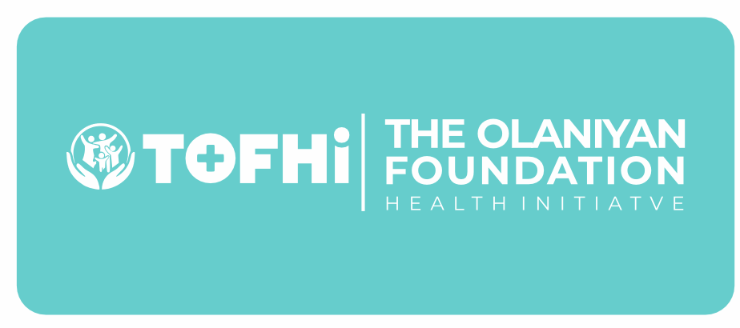
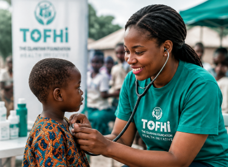

The Olaniyan Foundation Health Initiative (TOFHI) is a non-profit organization dedicated to improving health outcomes, advancing wellness, and building healthier, stronger communities across Nigeria and beyond.

Free medical services and health screenings for underserved communities.
Creating awareness and promoting preventive healthcare.
Supporting mothers and children for a healthier generation.
Partnering for lasting, positive change.
TOFHI exists to help make quality health information, preventive care and community support more accessible to people who need them most.
Our approach is collaborative and people-first: we work with health professionals, volunteers, institutions and communities to turn compassion into practical, sustainable action.
Community-based outreach, screenings and health support designed around local needs.
Accessible education that helps individuals and families make informed health decisions.
Building meaningful partnerships that extend reach and strengthen community outcomes.
Volunteer your skills, partner with TOFHI, support an initiative or help us connect with communities that need health-focused action.
Together, we can make quality healthcare more accessible to all.